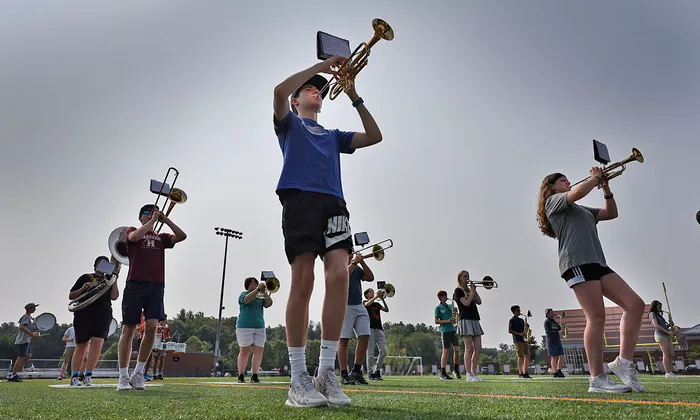

Welcome to the offical fanpage of the HHSMB!
Often cited as the Pride of Hanover, the Hanover High School Marching Band spreads feelings of atmosphere and euphoria all across the community. From every game they play at, every parade they march in, and every school event they attend, the HHSMB is sure to liven up the event and create an experience that will send you away joyfully. Without them, Hanover High School would not have the same ethusiastic Hawk Spirit that permeates its halls every day!
On this enthusiast fanpage, you can explore the culture of the HHSMB and feel like you are a part of the great organization, ensemble, and band family that it is!